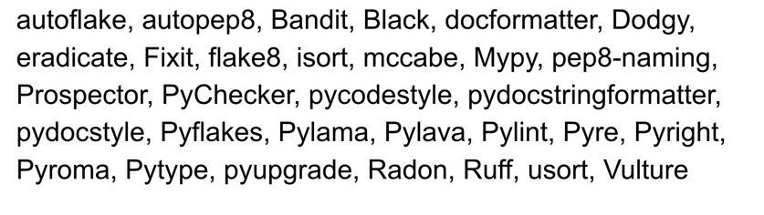

Linter & Formatter & Code Quality Tools¶
Here we'll introduce the linter, formatter and code quality tools used in the project. We won't introduce the tools in detail, but just give a brief introduction and some examples, which are extracted from the official docs.
Ruff and MyPy(Recommended)¶
Swiss Army Knife :-)¶
PyCon US 2023 - An Overview of the Python Code Tool Landscape 2023

There are a few of them out there. I really didn't understand what I was getting myself into. I had heard of some of them, but many of them have similar names and some I had never heard of, and I found the whole thing really confusing.1 - Al Sweigart
The tools' categories
We use the categories defined by Al Sweigart in his blog1.
PEP8 -> pycodestyle¶
pep8 was renamed to pycodestyle
pycodestyle is a tool to check your Python code against some of the style conventions in PEP 8... This package used to be called pep8 but was renamed to pycodestyle to reduce confusion. - pycodestyle doc
- PEP 8 – Style Guide for Python Code
- pycodestyle (formerly called pep8) - Python style guide checker
We wouldn't use the pycodestyle package directly
We wouldn't use the pycodestyle package directly,
but we would use the flake8 package which is a wrapper around pycodestyle,
and it also includes other tools like pyflakes(static analysis tool) and mccabe(complexity checker).
Isort: Style Linter for Import Statements¶
isort your imports, so you don't have to.
isort is a Python utility / library to sort imports alphabetically, and automatically separated into sections and by type. It provides a command line utility, Python library and plugins for various editors to quickly sort all your imports. It requires Python 3.7+ to run but supports formatting Python 2 code too. - isort doc
The example from isort doc is very clear:
Before isort:
from my_lib import Object
import os
from my_lib import Object3
from my_lib import Object2
import sys
from third_party import lib15, lib1, lib2, lib3, lib4, lib5, lib6, lib7, lib8, lib9, lib10, lib11, lib12, lib13, lib14
import sys
from __future__ import absolute_import
from third_party import lib3
print("Hey")
print("yo")
After isort:
from __future__ import absolute_import
import os
import sys
from third_party import (lib1, lib2, lib3, lib4, lib5, lib6, lib7, lib8,
lib9, lib10, lib11, lib12, lib13, lib14, lib15)
from my_lib import Object, Object2, Object3
print("Hey")
print("yo")
Flake8: Error & Style Linter, Complexity Analysis¶
For example, we have a file hello.py:
hello.py
print ( "Hello, World" )
After running flake8 hello.py, we got the following result:
hello.py:1:6: E211 whitespace before '('
hello.py:1:8: E201 whitespace after '('
hello.py:1:23: E202 whitespace before ')'
hello.py:1:25: W292 no newline at end of file
Break code style is easy in Python
We got four code style mistakes in a one line hello world code.
We can see that the flake8 only check the code style, but not fix it.
Later, we'll show how to use black to fix the code style automatically.
Black: Code Formatter¶
Black
Black is a PEP 8 compliant opinionated formatter with its own style.
Use black is simple, just run black . in the project root directory.
We can also use black on single file, just run black hello.py.
With the file hello.py:
hello.py
print ( "Hello, World" )
After running black hello.py, the code style is fixed:
print("Hello, World")
Meantime, black also give us a statistics log:
reformatted hello.py
All done! ✨ 🍰 ✨
1 file reformatted, N files left unchanged.
Ruff: Linter & Formatter¶
As just mentioned before, many people recommend to use Ruff, because it's a very cool tool.
- It's VERY fast.
Mypy: Type Checker¶
We use an example from official docs of mypy.
greeting
A function without type annotations is considered to be dynamically typed by mypy:
def greeting(name):
return 'Hello ' + name
greeting(123)
greeting(b"Alice")
def greeting(name: str) -> str:
return 'Hello ' + name
greeting(3)
After run mypy hello.py, we got the following result:
hello.py:5: error: Argument 1 to "greeting" has incompatible type "int"; expected "str" [arg-type]
Found 1 error in 1 file (checked 1 source file)
Pre-commit¶
Pre-commit can be treated as a linter manager, it can manage the linters in the project and run them in a batch.
Pre-commit run result
repos:
- repo: https://github.com/pre-commit/pre-commit-hooks
rev: v4.5.0
hooks:
- id: check-toml
- id: check-yaml
- id: end-of-file-fixer
- id: trailing-whitespace
exclude: .+\.csv
- id: mixed-line-ending
args: [--fix=lf]
- repo: https://github.com/psf/black
rev: 23.11.0
hooks:
- id: black
- repo: https://github.com/pycqa/isort
rev: 5.12.0
hooks:
- id: isort
args: ["--profile", "black"]
- repo: https://github.com/pycqa/flake8
rev: 6.1.0
hooks:
- id: flake8
- repo: https://github.com/pre-commit/mirrors-mypy
rev: v1.7.1 # Use the sha / tag you want to point at
hooks:
- id: mypy
args: [--strict, --ignore-missing-imports]
check toml...............................................................Passed
check yaml...............................................................Passed
fix end of files.........................................................Passed
trim trailing whitespace.................................................Passed
mixed line ending........................................................Passed
black....................................................................Passed
isort....................................................................Passed
flake8...................................................................Passed
mypy.....................................................................Passed
Pre-commit quick start (with Poetry)
- Fellow the
Quick startin https://pre-commit.com/ - Run
poetry add pre-committo installpre-commitinto the project - Run
pre-commit installto install the hooks - Run
poetry shellinto the created python venv environment - Run
pre-commit run -ato check all the files in the project
SonarLint¶
SQLFluff¶
SQLFluff is a linter for SQL code.
SQLFluff
SQLFluff is an open source, dialect-flexible and configurable SQL linter. Designed with ELT applications in mind, SQLFluff also works with Jinja templating and dbt. SQLFluff will auto-fix most linting errors, allowing you to focus your time on what matters. - SQLFluff doc